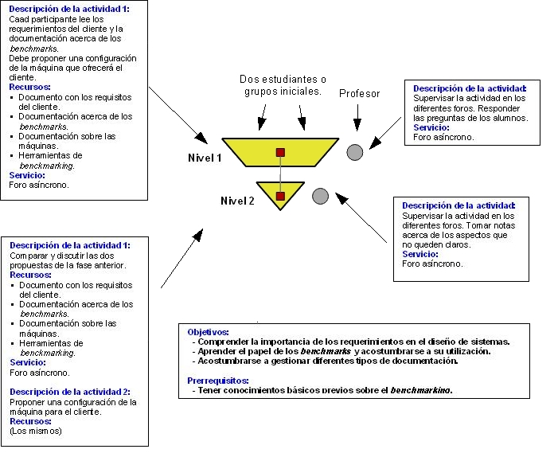

Diseño de Aprendizaje basado en el CLFP Pirámide:
Diseño simple sistema de computación
Propuesta colaborativa de un sistema de computación para un
cliente con requisitos particulares donde cada participante contribuye
con una propuesta que es comparada con otras y refinada adecuadamente.
El escenario es presencial, en el que cada persona dispone de un
ordenador.
